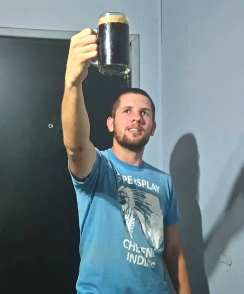
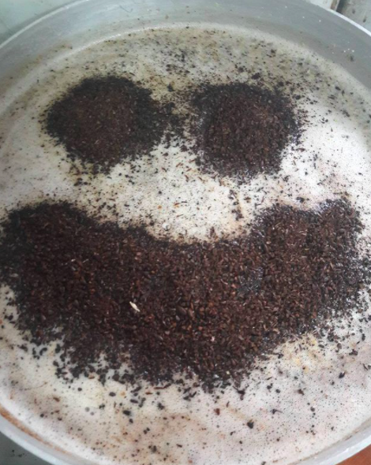
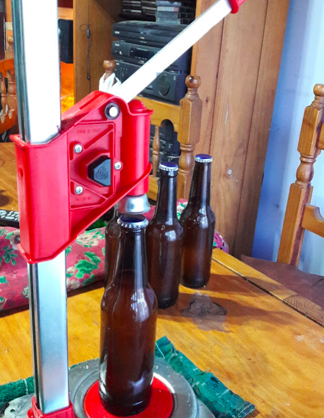
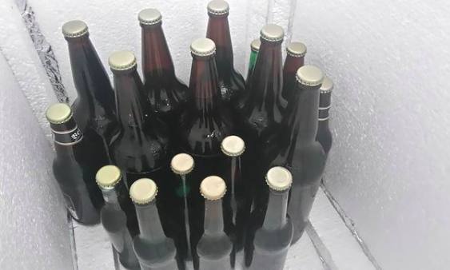
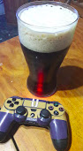
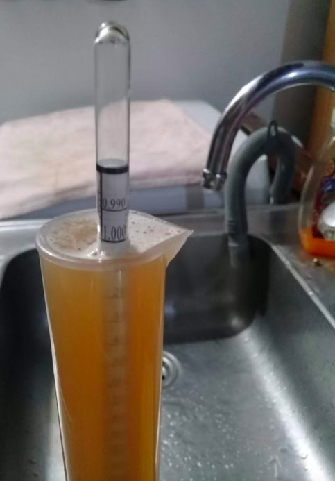
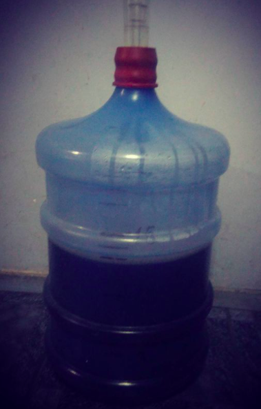

Todo comienza en el verano del 2016, donde Iván alias Manco. Adquiere su primer equipo de elavoracion de cerveza artesanal, gracias a un prestamo por parte de su cuñado, el cual gran parte fue saldada con birra. El cual era muy rudimentario, pero con ganas y voluntad, pudo realizar de las mejores cervezas. Sin un fin comercial y dedicado a brindar felicidad en estado liquido a sus amigos, fue dominando la tecnica. Hoy en dia quiere compartir sus mas grandes recetas, contar la historia de la cerveza y compartir esta pacion.


